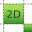

ALWavingDetection API¶
NAOqi People Perception - Overview | API
Namespace : AL
#include <alproxies/alwavingdetectionproxy.h>
Method list¶
-
class
ALWavingDetectionProxy¶
- As any module, this module inherits methods from ALModule API.
- It also inherits methods from ALExtractor API.
- And has the following specific methods if 3d camera available:
- Otherwise, on Aldebaran robots without 3d camera, this module has the following specific methods:
Event list¶
ALMemory Key list¶
Methods¶
-
float
ALWavingDetectionProxy::getMaxDistance()¶  3d sensor only
3d sensor onlyReturns: The current value of MaxDistance (in meters). The default value is 2.5m. Please refer to ALWavingDetection for details.
-
bool
ALWavingDetectionProxy::setMaxDistance(const float& distance)¶ - 3d sensor only
Sets the value of MaxDistance. Please refer to ALWavingDetection for details.
Parameters: - distance – Value of the new MaxDistance (in meters). It must be between 0.5 and 3 meters.
Returns: true if the update succeeded.
-
float
ALWavingDetectionProxy::getMinSize()¶ - 3d sensor only
Returns: The current value of MinSize (in meters). The default value is 0.1m. Please refer to ALWavingDetection for details.
-
bool
ALWavingDetectionProxy::setMinSize(const float& size)¶ - 3d sensor only
Sets the value of MinSize. Please refer to ALWavingDetection for details.
Parameters: - size – Value of the new MinSize (in meters). It must be between 0.05 and 0.3 meter.
Returns: true if the update succeeded.
-
float
ALWavingDetectionProxy::getThreshold()¶  2d sensor only
Returns: The current value of threshold (normalized in range [0,1]). The default value is 0.4. Please refer to ALWavingDetection for details.
-
bool
ALWavingDetectionProxy::setThreshold(const float& threshold)¶ 2d sensor only
Sets the value of Threshold. Please refer to ALWavingDetection for details.
Parameters: - threshold – Value of the new threshold (in range [0,1]).
Returns: true if the update succeeded.
Events¶
-
Event:callback(std::string eventName, AL::ALValue wavingInfo, std::string subscriberIdentifier)¶
"WavingDetection/Waving" Raised when something just waved at the robot.
Parameters: - eventName (std::string) – “WavingDetection/Waving”
- wavingInfo – waving information (see ALWavingDetection Overview).
- subscriberIdentifier (std::string) –
-
Event:callback(std::string eventName, int id, std::string subscriberIdentifier)¶
"WavingDetection/PersonWaving" - 3d sensor only
Raised when someone just waved at the robot.
Parameters: - eventName (std::string) – “WavingDetection/PersonWaving”
- id – ID of the person.
- subscriberIdentifier (std::string) –
-
Event:callback(std::string eventName, int id, std::string subscriberIdentifier)¶
"WavingDetection/PersonWavingCenter" - 3d sensor only
Raised when someone just waved at the robot and the waving was detected ahead of the person. The most usual case is when the person waved with one of his/hers arm, but it has not been possible to detect which arm he/she was using.
Parameters: - eventName (std::string) – “WavingDetection/PersonWavingCenter”
- id – ID of the person.
- subscriberIdentifier (std::string) –
-
Event:callback(std::string eventName, int id, std::string subscriberIdentifier)¶
"WavingDetection/PersonWavingLeft" - 3d sensor only
Raised when someone just waved at the robot and the waving was detected on the left size of the person. The most usual case is when the person waved with his/her left arm.
Parameters: - eventName (std::string) – “WavingDetection/PersonWavingLeft”
- id – ID of the person.
- subscriberIdentifier (std::string) –
-
Event:callback(std::string eventName, int id, std::string subscriberIdentifier)¶
"WavingDetection/PersonWavingRight" - 3d sensor only
Raised when someone just waved at the robot and the waving was detected on the right size of the person. The most usual case is when the person waved with his/her right arm.
Parameters: - eventName (std::string) – “WavingDetection/PersonWavingRight”
- id – ID of the person.
- subscriberIdentifier (std::string) –
ALMemory Keys¶
-
bool
PeoplePerception/Person/<ID>/IsWaving¶ - 3d sensor only
Says whether or not the person is waving at the robot. To have more information about the waving and its position with respect to the body of the person, it is possible to use the 3 next keys: IsWavingLeft, IsWavingRight and IsWavingCenter. <ID> is the ID of the person (see ALPeoplePerception API).
-
bool
PeoplePerception/Person/<ID>/IsWavingCenter¶ - 3d sensor only
Is set to true when some movements have been detected ahead of the body of the person. The most usual case is when the person is waving with one of his/her arms, but it has not been possible to detect which arm he/she was using. <ID> is the ID of the person (see ALPeoplePerception API).
-
bool
PeoplePerception/Person/<ID>/IsWavingLeft¶ - 3d sensor only
Is set to true when some movements have been detected on the left size of the person. The most usual case is when the person is waving with his/her left arm. <ID> is the ID of the person (see ALPeoplePerception API).
-
bool
PeoplePerception/Person/<ID>/IsWavingRight¶ - 3d sensor only
Is set to true when some movements have been detected on the right size of the person. The most usual case is when the person is waving with his/her right arm. <ID> is the ID of the person (see ALPeoplePerception API).